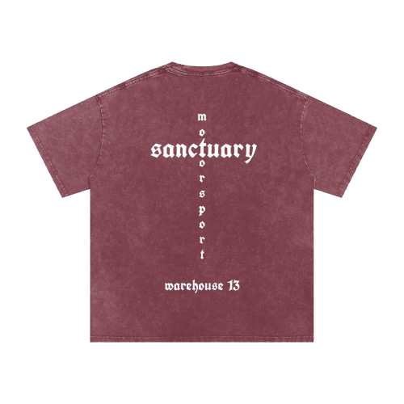
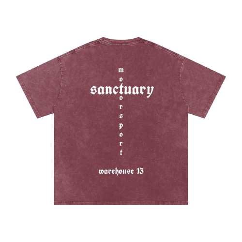

homepage
Sanctuary Motorsport is a clothing brand born from the intersection of speed, style, and self-expression. Inspired by motorsport culture, we create streetwear that captures the raw energy of the track and the freedom of the road.
 

Acid Wash Oversized Tee
[CLASSIC]
Built for the next generation of speed lovers, the Sanctuary Motorsport Kids Tee features our bold gothic logo front and back, bringing motorsport culture to the streetwear scene. Comfortable, durable, and designed to move.
Available in: White, Black, Navy Blue
Sizes: Ages 4–14
Fit: Regular
Material: 100% Cotton